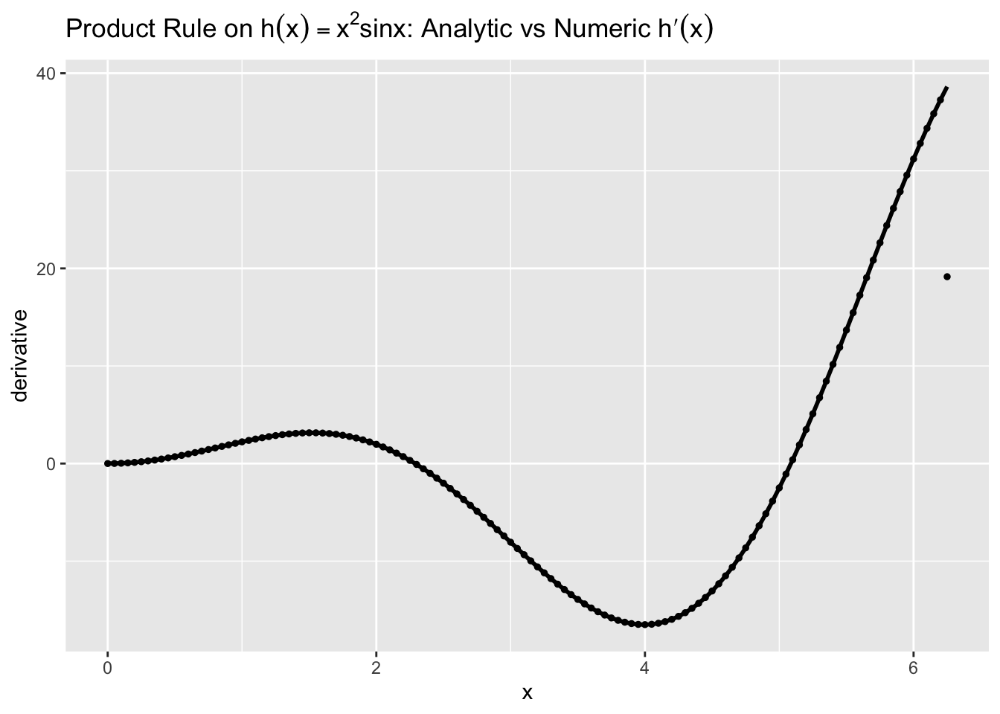
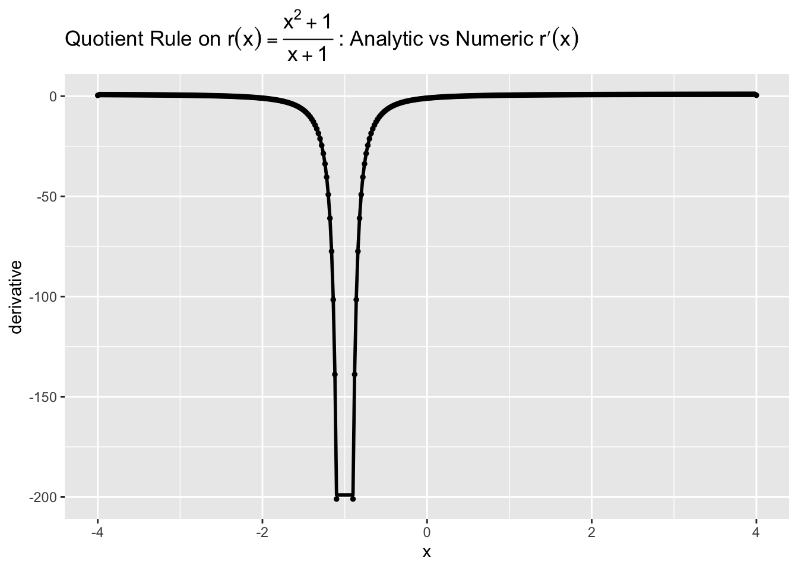
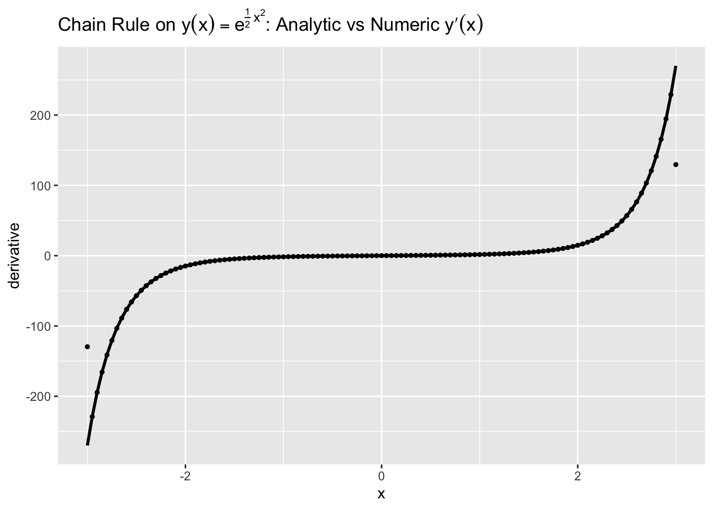
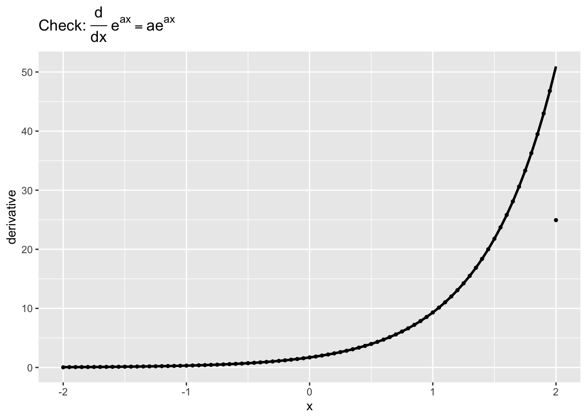
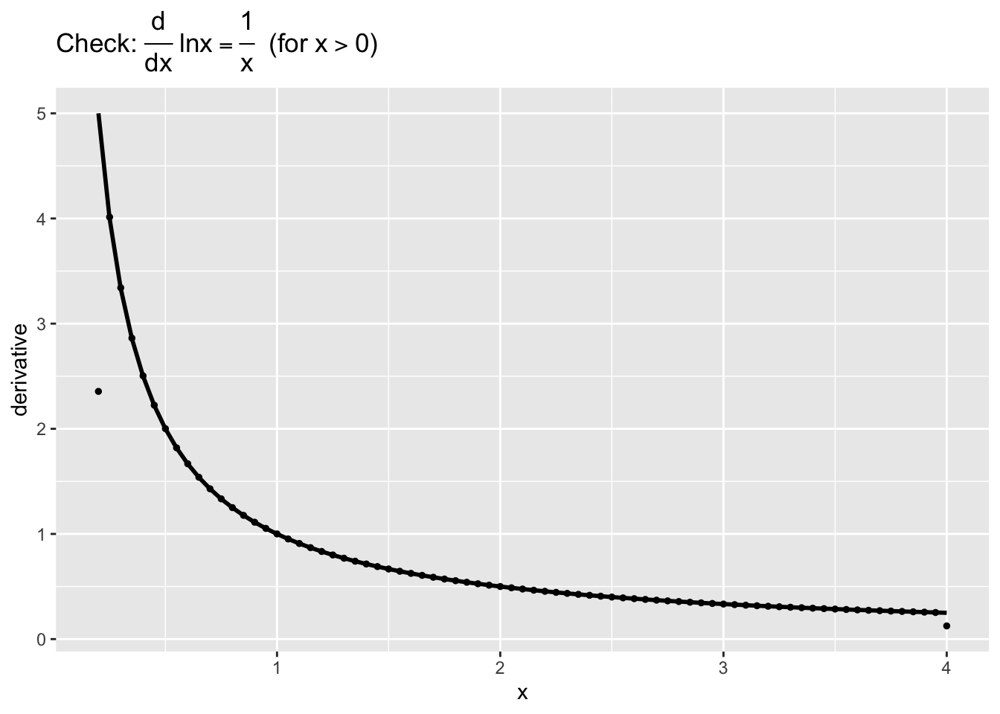
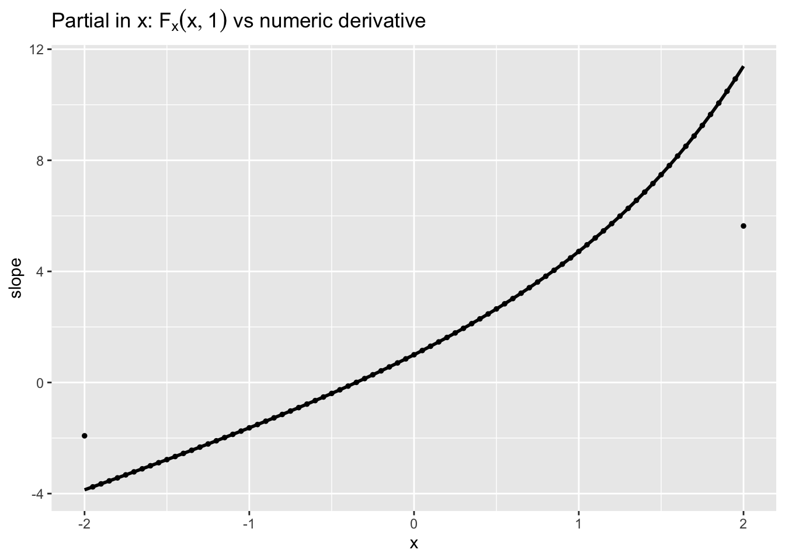
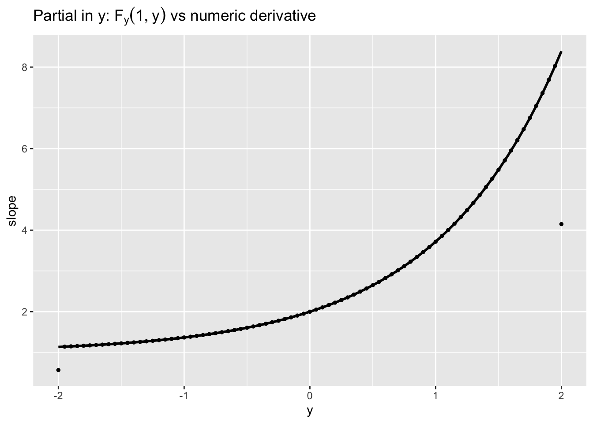

12Lecture 4: Computing Derivatives of Complex Functions
Module 5: Calculus for Data Science - Week 2
12.1 Introduction
Today we extend the basic derivative idea to combinations and compositions of functions you will actually meet in data work. We focus on the product rule, quotient rule, and chain rule, plus quick reminders for exponentials and logarithms. For two-variable models, we will peek at partial derivatives in a practical way.
Our goal is simple: learn the rules, apply them to realistic examples, and verify results numerically in R. The emphasis remains on intuition and implementation, not formal proofs.
12.2 1. The Rules We Need (Concise)
Let \(f\) and \(g\) be differentiable where relevant.
Exponentials:\(\frac{d}{dx}\,e^{a x} = a e^{a x}\); more generally \(\frac{d}{dx}\,a^x = a^x\ln a\).
Logarithm:\(\frac{d}{dx}\,\ln x = \frac{1}{x}\) for \(x>0\).
We will use these to differentiate more complex expressions and then check with a numerical derivative as a sanity check.
12.3 2. Product Rule in Action
12.3.1 2.1 Worked Example and Numeric Check
Consider \(h(x) = x^2\sin x\). By the product rule, \[
h'(x) = 2x\sin x + x^2\cos x.
\]
The next code computes both formulas on a grid and compares them to a centered-difference estimate.
Code
# Purpose: Verify the product rule on h(x)=x^2 sin x by comparing analytic and numeric derivatives.# We compute h' = 2x sin x + x^2 cos x, and compare to a centered-difference derivative.library(ggplot2)library(latex2exp)h <-function(x) x^2*sin(x)hp <-function(x) 2*x*sin(x) + x^2*cos(x) # product rule# Grid and numeric derivative via centered differencex <-seq(0, 2*pi, by =0.05)h_step <-0.025h_forward <-h(pmin(x + h_step, max(x)))h_backward <-h(pmax(x - h_step, min(x)))h_num <- (h_forward - h_backward) / (2*h_step)df <-data.frame(x = x, Analytic =hp(x), Numeric = h_num)ggplot(df, aes(x)) +geom_line(aes(y = Analytic), color ="black", linewidth =1) +geom_point(aes(y = Numeric), color ="black", size =1) +labs(title =TeX("Product Rule on $h(x)=x^2\\sin x$: Analytic vs Numeric $h'(x)$"),x ="x", y ="derivative" )

Key Insight: The numeric derivative (points) closely tracks the analytic curve (line), confirming the product rule result for \(h'(x)\).
12.4 3. Quotient Rule in Action
12.4.1 3.1 Worked Example and Numeric Check
Let \[
r(x) = \frac{x^2 + 1}{x + 1},\quad x \ne -1.
\] Then \[
r'(x) = \frac{(2x)(x+1) - (x^2+1)(1)}{(x+1)^2} = \frac{x^2 + 2x - 1}{(x+1)^2}.
\]
We compare the analytic derivative to a numeric estimate; we omit a small window around \(x=-1\) to avoid the vertical asymptote.
Code
# Purpose: Verify the quotient rule on r(x)=(x^2+1)/(x+1) by comparing analytic and numeric derivatives.# We avoid x near -1 to prevent numerical instability.library(ggplot2)library(latex2exp)r <-function(x) (x^2+1) / (x +1)rp <-function(x) (x^2+2*x -1) / (x +1)^2# Grid excluding a window around -1x_full <-seq(-4, 4, by =0.02)x <- x_full[abs(x_full +1) >0.1]# Centered difference on the pruned gridstep <-0.01r_forward <-r(pmin(x + step, max(x)))r_backward <-r(pmax(x - step, min(x)))r_num <- (r_forward - r_backward) / (2*step)df <-data.frame(x = x, Analytic =rp(x), Numeric = r_num)ggplot(df, aes(x)) +geom_line(aes(y = Analytic), color ="black", linewidth =1) +geom_point(aes(y = Numeric), color ="black", size =1) +labs(title =TeX("Quotient Rule on $r(x)=\\frac{x^2+1}{x+1}$: Analytic vs Numeric $r'(x)$"),x ="x", y ="derivative" )

Key Insight: Away from the asymptote at \(x=-1\), the numeric and analytic derivatives align well. Near divisions by small denominators, numerical estimates can be unstable—plotting or masking those regions is wise.
12.5 4. Chain Rule in Action
12.5.1 4.1 Worked Example and Numeric Check
Consider \(y(x) = e^{\frac{1}{2}x^2}\). Let \(u(x)=\frac{1}{2}x^2\). Then \[
y'(x) = e^{u(x)}\,u'(x) = e^{\frac{1}{2}x^2}\cdot x.
\]
We confirm this with a centered-difference derivative.
Code
# Purpose: Verify the chain rule on y(x)=exp(0.5 x^2) where y' = exp(0.5 x^2) * x.# We compare analytic vs numeric derivatives on a grid.library(ggplot2)library(latex2exp)y <-function(x) exp(0.5* x^2)yp <-function(x) exp(0.5* x^2) * xx <-seq(-3, 3, by =0.05)h <-0.025y_forward <-y(pmin(x + h, max(x)))y_backward <-y(pmax(x - h, min(x)))y_num <- (y_forward - y_backward) / (2*h)df <-data.frame(x = x, Analytic =yp(x), Numeric = y_num)ggplot(df, aes(x)) +geom_line(aes(y = Analytic), color ="black", linewidth =1) +geom_point(aes(y = Numeric), color ="black", size =1) +labs(title =TeX("Chain Rule on $y(x)=e^{\\frac{1}{2}x^2}$: Analytic vs Numeric $y'(x)$"),x ="x", y ="derivative" )

Key Insight: The derivative of a composition multiplies the outer derivative (evaluated at the inner function) by the inner derivative. The numerical check validates \(y'(x)=e^{\frac{1}{2}x^2}x\).
12.6 5. Quick Reminders: \(e^x\) and \(\ln x\)
The derivative of \(e^{a x}\) is \(a e^{a x}\); the derivative of \(\ln x\) is \(\frac{1}{x}\) for \(x>0\). The short code below verifies both on a grid.
Code
# Purpose: Sanity-check derivative identities for exp(ax) and ln(x) using numeric differences.library(ggplot2)library(latex2exp)f_exp <-function(x, a =1.7) exp(a * x)fp_exp <-function(x, a =1.7) a *exp(a * x)f_ln <-function(x) log(x)fp_ln <-function(x) 1/ xx1 <-seq(-2, 2, by =0.05)x2 <-seq(0.2, 4, by =0.05) # x>0 for logh <-0.025# exp(ax)num_exp <- (f_exp(pmin(x1 + h, max(x1))) -f_exp(pmax(x1 - h, min(x1)))) / (2*h)df_exp <-data.frame(x = x1, Analytic =fp_exp(x1), Numeric = num_exp)# ln xnum_ln <- (f_ln(pmin(x2 + h, max(x2))) -f_ln(pmax(x2 - h, min(x2)))) / (2*h)df_ln <-data.frame(x = x2, Analytic =fp_ln(x2), Numeric = num_ln)p1 <-ggplot(df_exp, aes(x)) +geom_line(aes(y = Analytic), color ="black", linewidth =1) +geom_point(aes(y = Numeric), color ="black", size =1) +labs(title =TeX("Check: $\\frac{d}{dx}e^{a x} = a e^{a x}$"), x ="x", y ="derivative")p2 <-ggplot(df_ln, aes(x)) +geom_line(aes(y = Analytic), color ="black", linewidth =1) +geom_point(aes(y = Numeric), color ="black", size =1) +labs(title =TeX("Check: $\\frac{d}{dx}\\ln x = \\frac{1}{x}$ (for $x>0$)"), x ="x", y ="derivative")p1

Code
p2

Key Insight: For commonly used transformations (exponential and logarithm), the analytic and numeric derivatives match closely on standard ranges—useful for quick audits of model code or transformation pipelines.
12.7 6. Partial Derivatives (Practical Peek)
For a function of two variables, \(F(x,y)\), the partial derivative with respect to \(x\) treats \(y\) as a constant, and vice versa. Consider \[
F(x,y) = x^2 y + e^{xy}.
\] Then \[
F_x(x,y) = 2xy + y e^{xy}, \quad F_y(x,y) = x^2 + x e^{xy}.
\]
A simple way to see a partial derivative is to fix one variable and compare numeric vs analytic derivatives in the other.
Code
# Purpose: Visualize partial derivatives by slicing F(x,y)=x^2 y + exp(x y).# We fix y=1 for F_x and x=1 for F_y and compare numeric vs analytic derivatives in 1D.library(ggplot2)library(latex2exp)F <-function(x, y) x^2* y +exp(x * y)Fx <-function(x, y) 2*x*y + y *exp(x * y)Fy <-function(x, y) x^2+ x *exp(x * y)# Slice for F_x at y=1y_fix <-1x <-seq(-2, 2, by =0.05)h <-0.025F_forward <-F(pmin(x + h, max(x)), y_fix)F_backward <-F(pmax(x - h, min(x)), y_fix)Fx_num <- (F_forward - F_backward) / (2*h)df_fx <-data.frame(x = x, Analytic =Fx(x, y_fix), Numeric = Fx_num)# Slice for F_y at x=1x_fix <-1y <-seq(-2, 2, by =0.05)F_forward_y <-F(x_fix, pmin(y + h, max(y)))F_backward_y <-F(x_fix, pmax(y - h, min(y)))Fy_num <- (F_forward_y - F_backward_y) / (2*h)df_fy <-data.frame(y = y, Analytic =Fy(x_fix, y), Numeric = Fy_num)p_x <-ggplot(df_fx, aes(x)) +geom_line(aes(y = Analytic), color ="black", linewidth =1) +geom_point(aes(y = Numeric), color ="black", size =1) +labs(title =TeX("Partial in $x$: $F_x(x,1)$ vs numeric derivative"), x ="x", y ="slope")p_y <-ggplot(df_fy, aes(y)) +geom_line(aes(y = Analytic), color ="black", linewidth =1) +geom_point(aes(y = Numeric), color ="black", size =1) +labs(title =TeX("Partial in $y$: $F_y(1,y)$ vs numeric derivative"), x ="y", y ="slope")p_x

Code
p_y

Key Insight: Fixing one variable turns a surface into a 1D curve; the partial derivative becomes an ordinary derivative along that slice. The numeric and analytic results agree, reinforcing the formulas for \(F_x\) and \(F_y\).
12.8 Practice Problems
Differentiate \(h(x)=x^2 e^{3x}\) using the product and chain rules. Check numerically on a grid.
Compute \(\displaystyle r'(x)\) for \(r(x)=\frac{\ln x}{x^2}\) (for \(x>0\)). Simplify and verify numerically away from \(x=0\).
Let \(y(x) = \ln\big(5 + 2x^3\big)\). Use the chain rule to find \(y'(x)\) and compare to a numeric derivative.
For \(F(x,y) = x e^{xy}\), compute \(F_x\) and \(F_y\). Then fix \(y=2\) and compare your \(F_x(x,2)\) to a numeric derivative of \(x \mapsto F(x,2)\).
12.9 In this lesson, you learned to
Apply the product, quotient, and chain rules to differentiate composite expressions.
Verify analytic derivatives with numeric differences as a practical sanity check.
Recall quick derivatives for exponentials and logarithms and use them fluently.
Interpret and compute partial derivatives by slicing multivariable functions.
12.10 Coming Up
Next time: Using Derivatives for Optimization. We will locate maxima/minima (critical points), connect derivatives to slope-based reasoning on data, and prepare for constrained problems and gradient-based search.